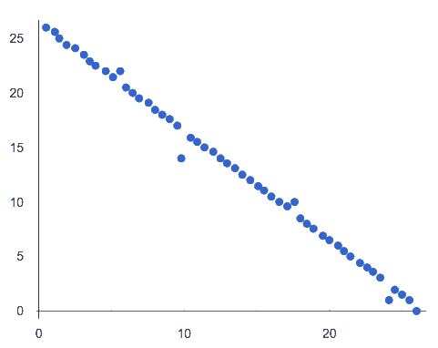
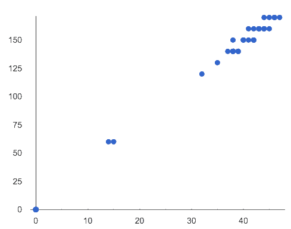
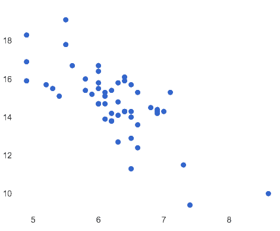
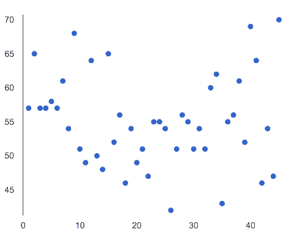

Match the description (left) with the scatter plot (right). TEACHERS: We have run linear regressions on these scatter plots to help you (the educators) to visualize the correlations better. Students have NOT YET been introduced to lr-plots.
This data has a moderate negative correlation. |
1-D |
A |
 |
|
This dataset is non-linear. |
2-C |
B |
 |
|
There is no correlation in this data. |
3-E |
C |
||
There is a strong positive correlation in this data. |
4-B |
D |
 |
|
There is a strong negative correlation in this data. |
5-A |
E |
 |

{kind=link}
{kind=link}
{kind=link}
{kind=link}
These materials were developed partly through support of the National Science Foundation,
(awards 1042210, 1535276, 1648684, and 1738598).  Bootstrap by the Bootstrap Community is licensed under a Creative Commons 4.0 Unported License. This license does not grant permission to run training or professional development. Offering training or professional development with materials substantially derived from Bootstrap must be approved in writing by a Bootstrap Director. Permissions beyond the scope of this license, such as to run training, may be available by contacting contact@BootstrapWorld.org.
Bootstrap by the Bootstrap Community is licensed under a Creative Commons 4.0 Unported License. This license does not grant permission to run training or professional development. Offering training or professional development with materials substantially derived from Bootstrap must be approved in writing by a Bootstrap Director. Permissions beyond the scope of this license, such as to run training, may be available by contacting contact@BootstrapWorld.org.